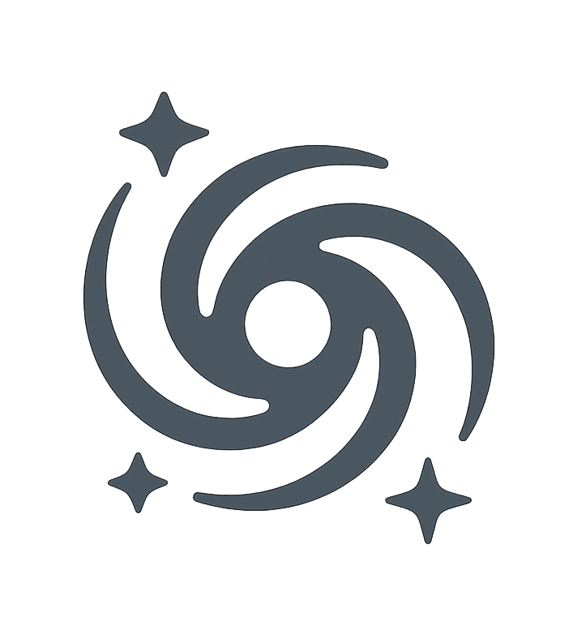

Meet the Team
PIs Seiji Fujimoto (U.Toronto) & Dan Coe (STScI).
International team from many+ institutions.
Read more about our team here.
VENUS will unlock uniform 10-filter NIRCam imaging across 60 lensing clusters in Cycle 4
and multi-epoch NIRCam imaging + NIRSpec PRISM+G395M spectroscopy in Cycle 5
Read more about VENUS here.
PIs Seiji Fujimoto (U.Toronto) & Dan Coe (STScI).
International team from many+ institutions.
Read more about our team here.

Public data products, when available.

View on ADS.
The key science driving VENUS.

Augue consectetur sed interdum imperdiet et ipsum. Mauris lorem tincidunt nullam amet leo Aenean ligula consequat consequat.
Augue consectetur sed interdum imperdiet et ipsum. Mauris lorem tincidunt nullam amet leo Aenean ligula consequat consequat.
Augue consectetur sed interdum imperdiet et ipsum. Mauris lorem tincidunt nullam amet leo Aenean ligula consequat consequat.
Augue consectetur sed interdum imperdiet et ipsum. Mauris lorem tincidunt nullam amet leo Aenean ligula consequat consequat.